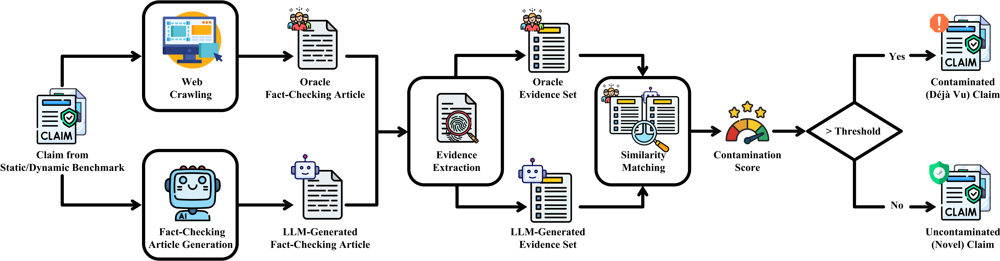

Multimodal automated fact-checking (MAFC) verifies claims by retrieving and reasoning over external evidence. However, most existing static benchmarks risk contamination: they primarily consist of outdated claims verifiable using an LLM's internal knowledge without external evidence. This can inflate performance estimates and fail to reflect true capability on novel claims that require up-to-date information. To address this, emerging dynamic benchmarks collect claims published after LLMs' knowledge cut-off dates, assuming they are uncontaminated. This work revisits this assumption by empirically studying contamination risks in both the state-of-the-art (SOTA) static AVeriTeC benchmark and our newly constructed dynamic ClaimReview2025Q4 benchmark, as well as their impact on MAFC evaluation.
Our experiments yield 16 findings, highlighting three key results: (1) Dynamic evaluation reduces but does not eliminate contamination risks, as 17.09%-29.30% of post-cut-off claims remain potentially contaminated; (2) Many newly published claims can be verified either directly or by synthesizing multiple pieces of public knowledge available before the cut-off; and (3) Contamination can induce statistically significant inflation in MAFC performance, increasing Macro-F1 by up to 11.34 points and distorting system rankings. In light of these findings, we re-evaluate SOTA LLMs under a strictly contamination-controlled setting. Our study provides practical guidelines for trustworthy MAFC evaluation.

We summarize our experimental findings according to RQ1-RQ4.
RQ1: To what extent are existing static and dynamic MAFC benchmarks contaminated?
RQ2: How does contamination arise in dynamic benchmarks?
RQ3: How does contamination affect MAFC performance evaluation?
RQ4: How do SOTA LLMs perform under contamination-controlled MAFC evaluation?
@inproceedings{rethink_mafc_eval_2026,
title={Novel Claim or Déjà Vu? Rethinking ''Contamination-Free'' Dynamic Evaluation for Multimodal Automated Fact-Checking},
author={He, Haorui and Chen, Xinwen and Wen, Dacheng and Cheng, Reynold and Lau, Francis C. M. and Li, Yupeng},
booktitle={Proc.~of MM},
year={2026},
}